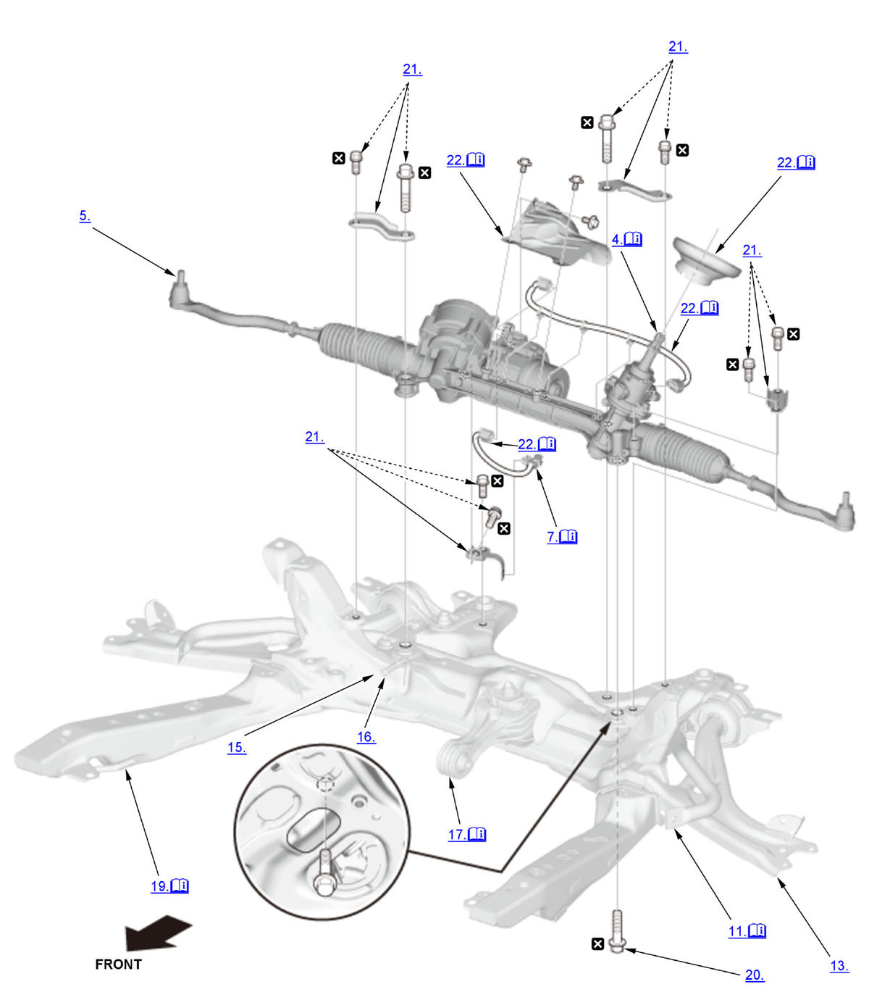

Steering Gearbox Removal and Installation (2017 2018 2019 2020 2021): Removal: Procedure
NOTE:
Numbered call-outs in figure pertain to list numbers in following procedure.

Courtesy of HONDA, U.S.A., INC. |
Detailed information, notes and precautions |
 |
Replace |
- Steering Column Tilt and Telescopic Position - Set
1. Set the steering column to the center tilt position, and to the center telescopic position. - Vehicle - Lift
- Front Wheel - Remove
- Steering Joint - Disconnect
NOTE: If the center guide is in place, discard it.
- Tie-Rod End Ball Joint - Disconnect (Both Sides)
- Engine Undercover - Remove
- Connector (EPS Subharness) - Disconnect
1. Disconnect the connectors (A) and remove the harness clip (B). - Connector (Front Suspension Stroke Sensor Subharness) - Disconnect (Type-R)
1. Disconnect the front suspension stroke sensor connectors (A) both side. - Front Suspension Stroke Sensor - Remove (Type-R)
1. Remove the front suspension stroke sensors both side . - Front Stopper Link - Disconnect (Type-R)
1. Disconnect both sides of the front stopper link from the lower arm . - Stabilizer Link - Disconnect
1. Disconnect both sides of the stabilizer link from the stabilizer bar . - Lower Arm - Disconnect (Type-R)
1. Disconnect both sides of the housing bracket ball joint from the lower arm . - Lower Arm Ball Joint - Disconnect (Both Sides) (Except Type-R)
- Intake Air Resonator - Remove (1.5 L engine)
- Exhaust Pipe A Mounting Rubber - Remove (Type-R)
- Exhaust Pipe A - Remove (Except Type-R)
- Torque Rod Mounting Bolt - Remove
- Front Brace - Remove
- Front Subframe - Remove
1. Remove both sides of the front lower arm mounting bolt from the body . 2. Set the subframe adapter (VSB02C000016) on a transmission jack (A), line up the slots in the arms with the bolt holes on the corner of the jack base, and tighten the bolts. 3. Attach the subframe adapter to the front subframe (B).
4. Remove the front subframe with the stiffeners
.
- Steering Gearbox Mounting Bolt - Remove
- Steering Gearbox Stiffener - Remove
- Heat Shield, Harness, and Pinion Shaft Grommet - Remove
1. Remove the heat shield (A). 2. Remove the harnesses (B).
3. Remove the pinion shaft grommet (C).